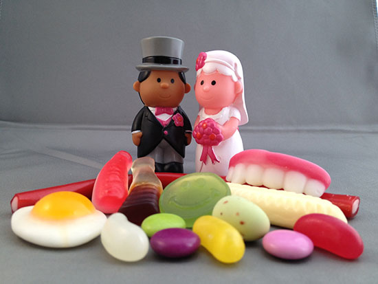
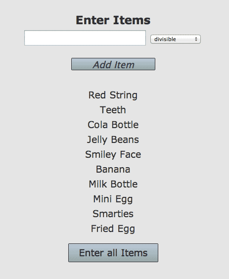
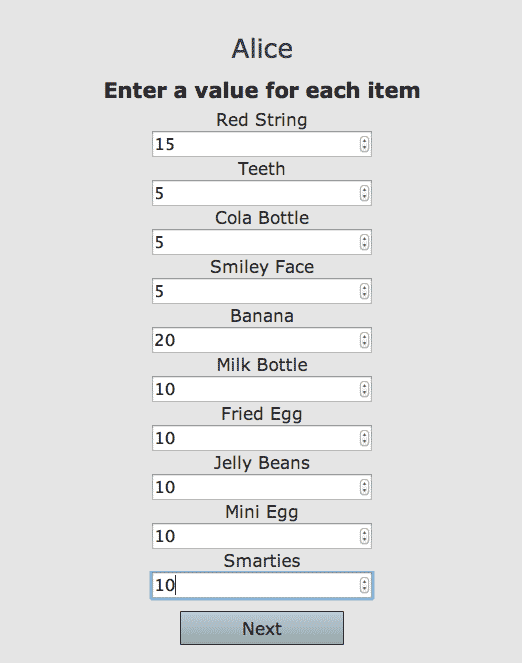
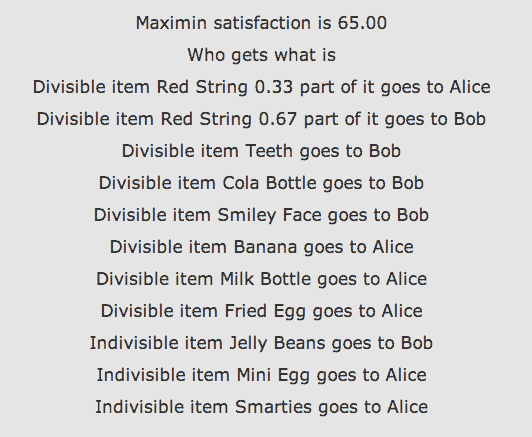
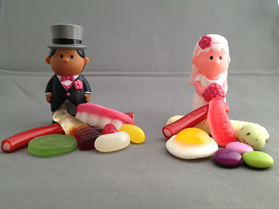

Separation Example
Alice & Bob were a couple

Alice & Bob bought some sweets together
Now Alice and Bob have decided to split up. But who gets which sweets?
Currently deciding this can be fraught, time consuming, expensive and can leave everybody feeling worse.
Here is a process Alice and Bob can follow that is transparent, clear, quick, cheap, impartial and outputs a quality metric. It is quick and cheap in that you can try it as it takes less than ten minutes. Clear and transparent in that each step is understandable. The success of an allocation is measured by what percentage of their total desire each participant receives. A fair allocation for two people is one where each person gets what they see as worth half of all of the items.
The sweets that are shared possessions of Alice and Bob are entered into the fairandsquare.ie system.
Next Alice inputs how much she values each of the sweets. She does this where Bob cannot see her valuations to preserve her privacy.
Alice gets 100 points to share between all of the items to be divided. For each item each person has to decide what weight of the total 100 points this item warrants for them.
In the output of the process she is allocated a collection of items. We sum up how satisfied she is with each item to get her satisfaction with that allocation.
Bob goes through the same steps.
A dividable object is something like fudge or cash that can be broken up. An indivisible item is something like a smartie or a chair that cannot be split into parts.
The values Alice and Bob placed on each of the sweets were
| Sweet | Bob | Alice | Dividable |
| Red String | 15 | 15 | Yes |
| Teeth | 10 | 05 | Yes |
| Cola Bottle | 10 | 05 | Yes |
| Jelly Beans | 25 | 10 | No |
| Smiley Face | 10 | 05 | Yes |
| Banana | 10 | 20 | Yes |
| Milk Bottle | 05 | 10 | Yes |
| Mini Egg | 05 | 10 | No |
| Smarties | 05 | 10 | No |
| Fried Egg | 05 | 10 | Yes |
Based on these values the process gives a suggested allocation of
This 65 means that the base allocation was 65% out of their possible 100 points. 65+65=130 which means because each person got more of what they desired the total satisfaction was over 100 points. 65 points each is also more than the fair 50 each. Alice and Bob consider this to be an acceptable allocation and they are happy.
If you have some questions about the process hopefully they are answered in our FAQ or you can email us on info@fairandsquare.ie